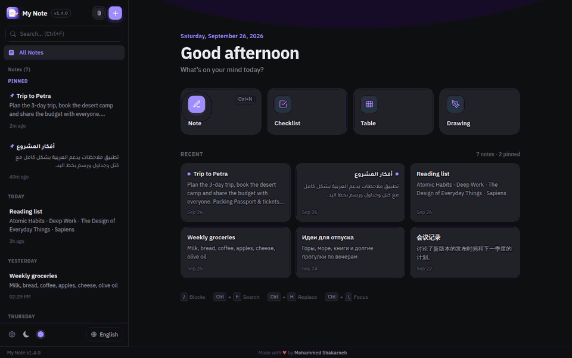
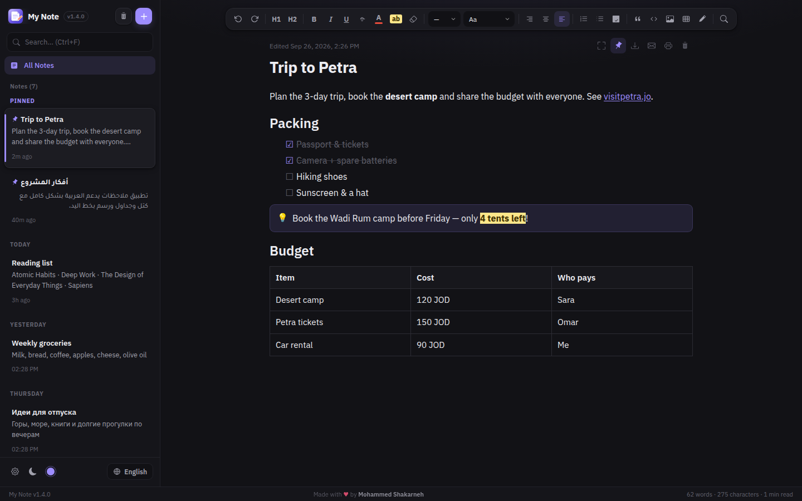
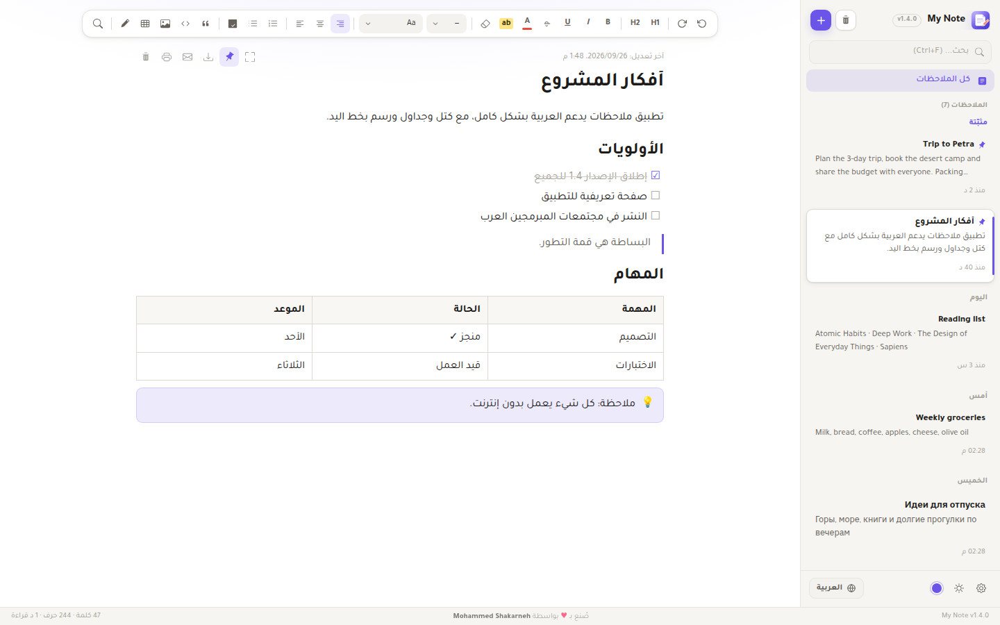
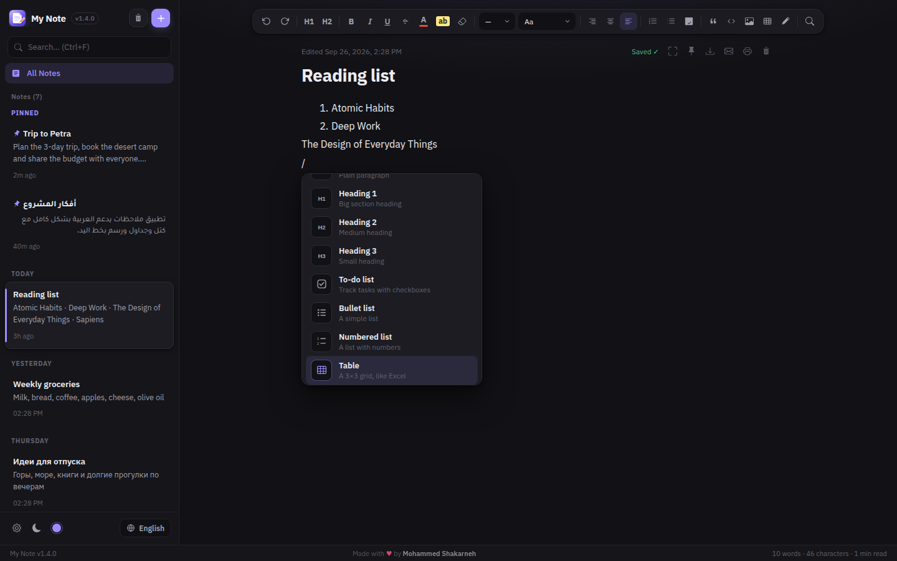
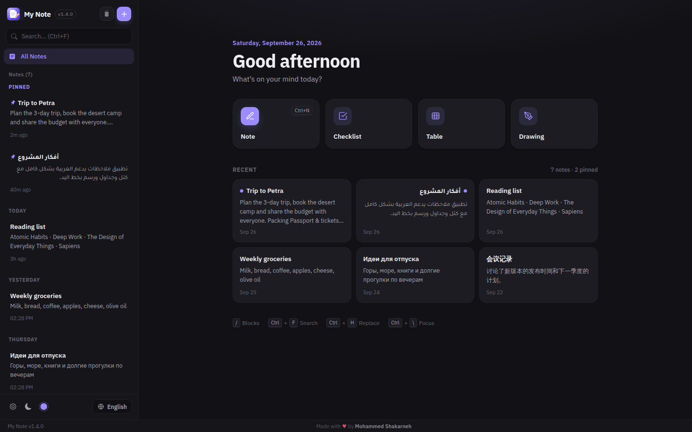

A free notes app for Windows with full Arabic support, block editing, tables, drawings and automatic updates. Works offline.

Type / for headings, to-dos, tables, callouts, quotes, code, dividers and drawings.
Every paragraph picks its own direction, so Arabic and English live happily in one note.
Build tables like in Excel and sketch by hand, right inside your notes.
Finds words with or without Arabic diacritics, in any language. Find & replace with Ctrl+H.
New versions download in the background and install with one click.
Your notes stay on your computer. Back up everything to one file, any time.




Yes. No ads, no account, no subscription.
Yes. Windows shows this for new apps that are not yet code-signed. Click "More info" → "Run anyway". The installer is built automatically on GitHub from the public source code.
Only on your computer (in %APPDATA%\NotesApp). You can back them up to a single file from Settings.
The app checks for new versions, downloads them in the background, and asks you to restart. Your notes are never touched.